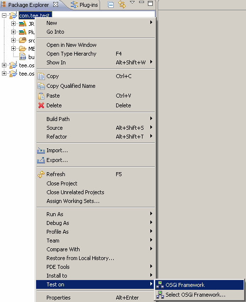

You can execute a test case project from the workspace on a connected OSGi framework.
To execute a test case from your Eclipse workspace, in one of the Eclipse navigation views (e.g. Package Explorer) right-click the test case plug-in project node and select the target framework from the Test on menu. The test case plug-in project will be built and exported to a JAR file. Then, the JAR file will be transferred to the OSGi framework and installed.
On success, the test case will be executed. If the Automatically show test-case-results option from mToolkit's preferences is selected, then the a summary of the test cases execution results will be displayed in the Eclipse web browser after test-case execution is finished.

Figure 1: Selecting a connected OSGi framework from the Test on menu.

OSGi Management Overview
OSGi Frameworks Tree
Remote Console

Adding/Removing an OSGi Runtime
Configuring the Properties of an OSGi Runtime
Connecting to/Disconnecting from an OSGi Runtime
Managing Bundles
Managing Applications
Using the Remote Console
Customizing OSGi Runtime Management
Opening the Web Admin Console inside Eclipse
OSGi Runtime Management Troubleshooting

Frameworks View
Frameworks View Tree Icons
Frameworks View Menus and Toolbar